SQL 참고 자료
- 어쩌다 취득한 SQL Developer 자격증을 공부하기 위해 만든 파일들입니다.
- 이 곳에서 요약본, 실습 파일 테이블 설명, 참조 사이트 링크를 볼 수 있습니다!
- 쓸 말이 없네요…총총… 앞으로는 NoSQL을 배울 예정이랍니다 😄
출처: https://www.optimizely.com/ab-testing/
{:.figure}
권정민님의 실무에서 활용하는 AB 테스트 발표자료에 따르면 AB Test은 사용자를 대상으로 한 실제 환경에서의 실험으로, A와 B에 따라 관심 있는 지표가 어떻게 바뀌는 지를 판단하는 방법입니다. 여기서 관심있는 지표란 양적으로 확인할 수 있는 지표들로, 클릭율 (CTR), 전환율 (Conversion Rate) 등이 있습니다. 위 그림에서 예를 들면 A와 B 디자인의 광고 중 B 광고의 클릭율이 높기 때문에 B 디자인이 더 효과적이다 예상할 수 있죠.
그럼 A보다 B가 낫다고 말하기 위해서는 얼마나 더 지표들의 값이 높아야할까요? 이를 판단하기 위해 고안된 방법이 바로 AB Test입니다. 그러나, 실제 환경은 실험 환경처럼 관심 밖의 요인들을 완벽히 통제할 수 없습니다. 다른 요인들이 A와 B로 인한 효과를 방해하거나 촉진해서 인과 관계를 정확히 추정하기 어렵기 때문입니다.
그 대안으로 AB test에서는 A와 B 디자인에 노출되는 사람들을 무작위로 나누어 최대한 실험 환경과 비슷하도록 유사 실험 환경을 구축합니다. 이를 위해 AB Test 설계 과정은 다음과 같습니다.
어떤 웹사이트에서 A와 B 디자인 중 어느 쪽이 구매로 전환되는 비율이 높은 지 알아본다고 가정합시다. 즉, 웹사이트에 방문한 사람들이 A와 B 디자인 중 어느 디자인에 더 현혹되어 구매하게 되는 지를 알아보는 것이죠. 이를 위해 방문자에게 랜덤하게 A와 B 디자인 중 하나를 보여주고 구매 여부를 체크합니다. 이러한 과정을 Conversion Testing이라 합니다. 여기서 가설은 "A보다 B가 구매로의 전환율이 높을 것이다"와 같은 내용이 됩니다.
선택지가 A와 B로 2개이면 베이지안 AB test는 가능도 (Likelihood)로 이항 분포 (Binomial Distribution)를, 사전 분포 (Prior)로 베타분포 (Beta Distribution)를 선정합니다. 그 이유는 무엇일까요?
가능도: 이항 분포
가능도는 우리가 관측하는 데이터의 함수를 의미합니다. 우리가 관측하는 데이터는 각 방문자마다 A나 B를 통해 구매를 했는 지의 여부입니다.
이항 분포를 따르는 확률 변수는 명의 사람 중 어떤 event를 성공한 사람 수를 의미하기 때문에 우리의 데이터도 이항 분포를 따른다 가정할 수 있습니다. 명의 사람 중 성공한 사람 수를 라 하고 그 성공 확률을 라 할 때, 이항 분포는 다음과 같이 정의됩니다.
예를 들어, A디자인을 본 방문자는 1,300명이고 그 중 120명이 구매를 했고, B디자인을 본 방문자는 1,270명이고 그 중 125명이 구매했다 상상해봅시다. 이 때 구매 행위가 어떤 event를 성공했다 보고 각 사람들의 구매 행위가 독립적이라고 가정하면, A디자인을 보고 구매한 사람 수와 B 디자인을 보고 구매한 사람 수는 각각 이항 분포를 따릅니다.
여기서 는 각 A, B 디자인을 통해 구매로 전환한 확률인 전환율로, 이항 분포의 관심사인 모수 (parameter)입니다.
사전 분포: 베타 분포
베이지안은 모수에 사전 분포를 가정해 모수의 실제 값이 하나가 아니라, 사람들의 믿음 (belief)에 따라 달라지는 분포 형태를 띠고 있다 생각합니다. 여기서 관심 모수는 인 전환율이기 때문에 이에 잘 맞는 사전 분포를 가정하는 것이 중요합니다.
이를 위해 사전 분포로 베타 분포 (Beta Distribution)을 가정합니다. 베타 분포를 따르는 확률 변수는 항상 사이의 값이기 때문에, 성공 확률의 분포의 자연스러운 가정이 됩니다. 베타 분포는 다음과 같이 정의됩니다.
베타 분포의 모수인 의 값에 따라 확률이 '어느 값에 밀집되어 있을 것이다’에 대한 사전적인 지식을 부여할 수 있습니다.
예를 들어, 아래의 그림 중 주황색 선인 Beta(2,8)의 경우 부근에서 확률밀도함수가 가장 높기 때문에 전환율이 0.12 부근이라는 배경 지식이 있다면 Beta(2,8)를 사전 분포로 사용할 수 있을 것입니다.
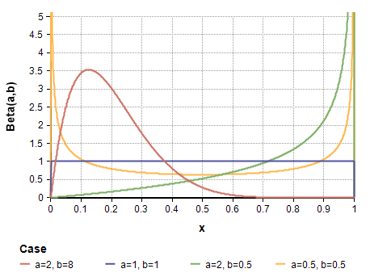
그러나, 특별한 사전 지식이 없을 경우 무정보 사전 분포 (Non-informative prior)를 주는 것이 일반적입니다. 무정보 사전 분포는 말 그대로 정보가 없는 사전 분포로, 베타 분포의 경우 에 해당합니다. 을 구하면 로, 균등 분포인 과 같습니다. 즉, 전환율에 대한 어떠한 지식도 없다면 전환율이 **“ 사이 어딘가에 랜덤하게 있을 것이다”**는 정보 없는 내용을 사전 분포로 가정할 수 있는 것입니다.
이러한 무정보 사전 분포를 쓰는 경우는
로 생각보다 많이 쓰입니다. 저희도 와 디자인의 전환율에 대한 사전 지식이 없다 가정하고 을 사전 분포로 사용하겠습니다.
사후 분포: 베타 분포
이제 A, B 방법의 전환율을 구하는 데 있어서 사전 분포는 베타 분포, 가능도는 이항 분포로 두는 것에 대해 자연스러우셔야 합니다. 사전 분포와 가능도를 각각 베타와 이항분포로 설정하는 것의 또 하나의 장점은 켤레성(Conjugacy)를 이용할 수 있다는 점입니다. 사후 분포(Posterior Distribution)를 구했을 때, 그 형태가 사전 분포와 같은 분포일 때 켤레성을 띤다고 말합니다.
사후 분포를 구하기 위해선 고등학교 때 배운 조건부 정리를 이용합니다. 모수인 와 관련있는 항만 남기고 정리하면 결국 사후 분포는 (가능도) (사전 분포)에 비례합니다.
따라서, 가능도가 이항 분포 고 사전 분포가 일 경우,
아래 수식과 같이 사후 분포는 를 따르게 됩니다. 즉, 사후 분포의 첫번째 모수는 +성공 횟수(), 두번째 모수는 + 실패 횟수 ()가 됩니다.
따라서 무정보 사전 분포인 를 가정했을 때,
사후 분포에서 난수를 생성한 후 평균을 구하면 각 전환율의 추정치를 구할 수 있습니다. 이를 파이썬으로 구현하면 다음과 같습니다.
1 | from IPython.core.pylabtools import figsize |
결과값인 0.31355은 A 디자인의 전환율이 B 디자인의 전환율보다 높을 확률이 31.36%정도밖에 되지 않음을 의미합니다. 다시 말하면, B 디자인 전환율이 A의 전환율보다 높을 확률이 68.64%이죠.
A 디자인의 전환율과 B 디자인의 전환율의 사후분포는 다음과 같이 그릴 수 있습니다. 오른쪽 그림은 단순히 왼쪽 그림을 확대한 그림입니다.
1 | # Posterior Dist of A and B |
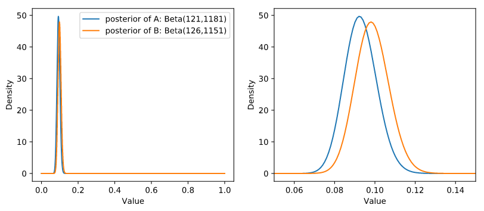
그림에서 보듯이, B 디자인의 전환율의 사후분포가 A보다 오른쪽에 위치함을 알 수 있습니다. 이렇게 앞에서 B 디자인 전환율이 A의 전환율보다 높을 확률이 68.64%인 것을 그림으로 확인해보았습니다.
AB test를 더 자세하게 알아보기 전 기대 수익 (Expected Revenue)을 베이지안 관점에서 보는 방법에 대해 알아봅시다. 만약 어떤 웹사이트의 기대 수익이
로 정의가 되고, 은 각각 $79, $49, $25 가격 플랜을 선택할 확률이고 는 아무 플랜을 선택하지 않을 확률이라 가정합시다. 이 확률들은 더하면 1이 된다는 제약조건을 가지고 있습니다.
이 때의 가능도 함수, 사전 분포는 어떻게 될까요?
정답은 이항 분포와 베타 분포의 확장판인 **다항 분포 (Multinomial Distribution)**와 **디리클레 분포 (Dirichlet Distribution)**입니다.
이에 대한 자세한 정의는 이 포스트에서 확인할 수 있습니다.
가능도: 다항 분포
만약 명의 사람이 $79, $49, $25 가격 플랜 중 하나를 선택할 때 각 플랜 별 사람수를 라 하고 선택하지 않은 사람 수를 라 하면 가능도는 다항 분포를 따르고 다음과 같이 주어집니다.
사전 분포: 디리클레 분포
디리클레 분포는 베타 분포의 확장판으로 다음과 같이 모수 를 가집니다.
베타 분포와 마찬가지로 도 무정보 사전 분포입니다.
사후 분포: 디리클레 분포
사전 분포로 을, 가능도로 를 관측한 다항 분포를 따른다할 때, 사후 분포는 켤레성으로 인해 다시 디리클레 분포인 를 따릅니다.
이제 앞에서 배운 내용들을 합쳐봅시다. A 디자인과 B 디자인이 있고, 이 디자인에 따른 기대 수익에 관심이 있습니다. 가격 플랜은 마찬가지로 월 $79, $49, $25의 세 개의 플랜이 있다 가정합시다. 관측된 데이터는 다음과 같습니다.
| 디자인 | 총 사람 수 | $79 선택 | $49 선택 | $25 선택 | 선택 X |
|---|---|---|---|---|---|
| A | 1000 | 10 | 49 | 80 | 864 |
| B | 2000 | 45 | 84 | 200 | 1671 |
| 합계 | 3000 | 55 | 133 | 280 | 2535 |
우리의 관심사는
입니다.
Q1. A와 B 중 어떤 디자인이 기대 수익이 많을까?
이제 A 디자인과 B 디자인을 통해 $79, $49, $25의 세 가격 플랜을 선택하거나 아무 플랜도 선택하지 않을 확률에 디리클레 사전 분포를 가정합니다. 이 확률에 대해 사전 지식이 없으므로 두 디자인의 확률들의 분포 모두 로 가정합니다.
또한, A 디자인과 B 디자인의 가격 플랜 별 사람 수는 다항 분포의 가능도를 가지게 됩니다. 위의 표와 비교했을 때 A 디자인에 노출된 사람수는 , A 디자인에 노출된 사람 중 $75, $49, $25 가격 플랜을 선택한 사람 수를 각각 , 아무 플랜도 선택하지 않은 사람 수를 입니다. 또한 B 디자인도 마찬가지로 라 둘 수 있습니다.
따라서, A 디자인과 B 디자인의 선택지별 확률의 사후 분포도 켤레성에 의해 디리클레 분포를 따릅니다.
이를 파이썬으로 구현하면 p_A와 p_B가 바로 사후 분포의 랜덤 샘플이 됩니다.
1 | n_A = 1000 |
하지만 저희의 관심사는 기대 수익입니다. 기대 수익은 앞에서 구한 것처럼 expected_revenue함수를 통해 기대 수익의 사후 분포를 구할 수 있습니다. A 디자인과 B 디자인에 따른 기대 수익 사후 분포의 랜덤 샘플은 ER_A와 ER_B에 저장됩니다.
1 | ER_A=expected_revenue(p_A) |
이 사후 분포는 특정한 분포를 따르지는 않지만, 랜덤 샘플들이 어떻게 분포되어 있는 지 히스토그램으로 확인할 수 있습니다.
1 | plt.hist(ER_A,label="E[R] of A",bins=50,histtype="stepfilled",alpha=.8) |
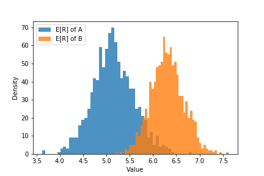
이 히스토그램을 보면 B 디자인의 기대 수익 분포가 A 디자인의 기대 수익 분포 보다 오른쪽에 위치합니다. 즉, B 디자인이 A 디자인보다 더 많은 기대 수익을 낼 것이라 예상할 수 있습니다.
그럼 B 디자인의 기대 수익이 A 디자인의 기대 수익보다 높을 확률은 얼마나 될까요? 아래의 코드처럼 계산하면 그 값은 0.981로 매우 높은 확률을 보입니다.
1 | print((ER_B>ER_A).mean()) |
Q2. 기대 수익이 얼마나 더 많을까?
B 디자인의 기대 수익이 A 디자인보다 얼마나 더 많은 지 확인하는 방법은 이 두 기대수익의 차 (difference)의 사후 분포를 보는 것입니다.
1 | plt.hist(ER_B-ER_A,histtype="stepfilled",color="red",alpha=0.5,bins=50) |
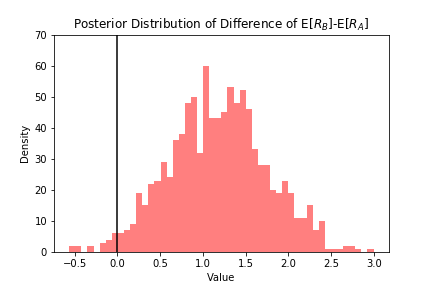
위의 그림을 보면 기대 수익의 차가 대부분 양수임을 볼 수 있습니다. 이의 점 추정치는 1.168이 됩니다.
1 | print((ER_B-ER_A).mean().round(3)) #1.168 |
t-test는 전통적인 빈도론적인(Frequentist) 가설 검정 방법으로 정해진 값에서 얼마나 표본 평균 (Sample Average)이 벗어나 있는 지를 봅니다. 이를 AB test에 적용하면 2표본-가설검정입니다. 앞에서 다룬 AB test와 달리 이 검정의 주체는 연속된 시간으로 연속형이기 때문에 t-test를 사용합니다.
John K. Kruschke는 이를 베이지안 버전으로 확장해 BEST (Bayesian Estimation Supersedes t-test)를 고안했습니다. 기존의 t-test과의 차이점은 다음과 같습니다.
| 질문 | Frequentist | Bayesian |
|---|---|---|
| 이상치가 포함되어도 괜찮은가? | No | Yes |
| 가설검정을 어떻게 하는가? | p-value 기반 | HDI 기반 |
Q1. 이상치가 포함되어도 괜찮은가?
자료에 이상치가 포함되어도 괜찮은가의 여부는 가설 검정을 하기 전 데이터의 분포를 어떤 것으로 가정하느냐에 따라 다릅니다. Frequentist t-test는 데이터가 정규 분포를 따른다 가정하지만, Bayesian은 데이터가 t 분포를 따른다 가정합니다.
정규 분포와 t 분포의 차이는 tail의 두께입니다. 정규분포에 비해 t 분포는 heavy tail이고 자유도 가 커질수록 정규분포에 근사합니다. heavy tail이라는 말은 데이터의 분산이 큼을 의미하고, 그만큼 이상치를 포함한다 말할 수 있습니다.
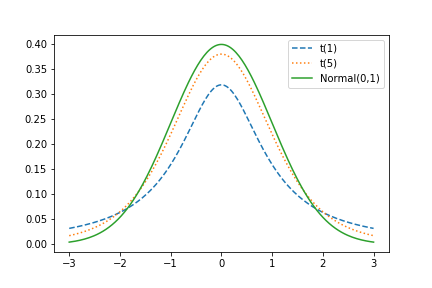
Frequentist t-test는 A와 B 방법에 각각 노출된 두 표본 집단이 정규 분포를 따른다 가정하고, 표본 평균과 표본 분산을 통해 t 통계량 ()를 산출합니다. 만약 데이터가 정규분포를 따르지 않을 경우 이상치를 제거하여 보정합니다.
이에 비해, BEST는 데이터가 t 분포를 따른다 가정하고 이상치가 있어도 분포 가정을 위배하지 않기 때문에 가설 검정 결과를 신뢰할 수 있습니다.
Q2. 가설 검정을 어떻게 하는가?
p-value
는 귀무 가설이 맞다는 전제 하에, 표본에서 실제로 관측된 통계치와 ‘같거나 더 극단적인’ 통계치가 관측될 확률입니다. 만약 귀무가설이 "A와 B 간의 CTR 차이가 없다"라면, 실제로 관측된 CTR 차이에 대한 통계치 ()를 구해 귀무가설 하의 t 분포 () 내에서 와 같거나 더 극단적인 통계치가 관측될 확률 이 p-value가 됩니다.
Frequentist는 이 p-value가 유의 수준 (보통 0.05)보다 작을 때 귀무 가설을 기각합니다. 그러나 이 p-value는 표본 크기에 따라 바뀌는 문제가 있습니다.
A와 B디자인의 CTR이 차이를 보여도 표본 크기가 커지면 p-value도 작아져 가설을 기각하는 경우가 많아지게 되는 것이죠. 이에 대한 자세한 예시는 박장시님의 AB 테스트에서 p-value에 휘둘리지 않기에서 확인하실 수 있습니다.
이에 비해 BEST는 p-value 대신 HDI (Highest Density Interval)을 이용합니다. HDI란 분포에서 가장 높은 확률 밀도를 나타내는 범위를 의미하고, 이 범위 안에 있는 값들은 가장 신뢰할만한 (credible) 값들입니다. 아래의 그림처럼, 분포에서 95% HDI에 속한 값들은 분포의 95%를 커버하고, 가장 높은 확률을 보이는 값들로 구성되어 있습니다.
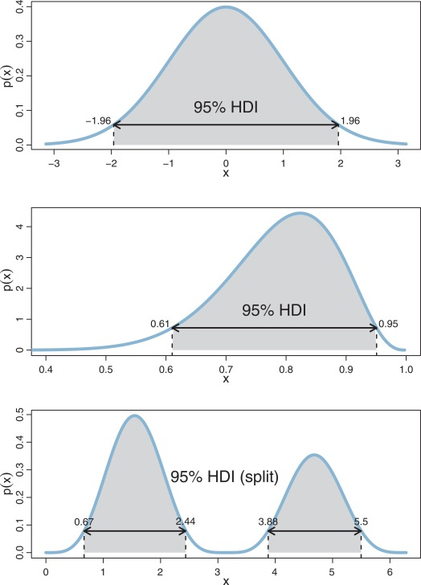
{:.lead data-width=“800” data-height=“100”}HDI는 Frequentist의 신뢰 구간 (Confidence Interval)과 비슷하지만 해석 상 더 직관적입니다. "95%의 확률로 모수가 이 구간 안에 있다"는 걸 말할 수 있는 건 HDI뿐입니다. Frequentist의 95% 신뢰 구간은 무한 번 표본 추출할 때마다 구한 신뢰구간 중 95%이 참값인 모수를 포함함을 의미합니다. 만약 100번의 표본을 추출했다면 그 각각의 신뢰구간 중 95개가 참값을 포함한다는 것이죠. 그러나 사실상 무한 번 표본을 추출하는 것이 불가능하니 이는 가상적인 내용이고 이론 상 존재하는 내용입니다. 따라서 HDI가 만약 0을 포함하고 있는 구간이라면 가설 검정 결과는 귀무 가설을 지지할 것이고, 포함하지 않는다면 대립 가설을 지지하게 됩니다.
A와 B 디자인에 따른 웹사이트 이용 시간의 차이를 BEST로 검정해봅시다. 이를 위해 각각 250명씩 A와 B 디자인에 노출되었다 가정했습니다. A 디자인을 쓴 웹사이트의 이용시간은 평균이 30이고 표준편차가 4인 정규분포를 따르고, B 디자인을 쓴 웹사이트의 이용시간은 평균이 26, 표준편차가 7인 정규분포를 따르도록 데이터를 생성했습니다.
1 | import numpy as np |
1 | [22.07725479 36.92520693 18.43953839 43.34529828 22.12233658 29.41956343 |
B의 이용시간을 보면 편차가 꽤 큼을 확인할 수 있습니다. 그렇기 때문에 t 분포로 가정하는 것이 좀 더 강건한 결과를 낼 수 있습니다.
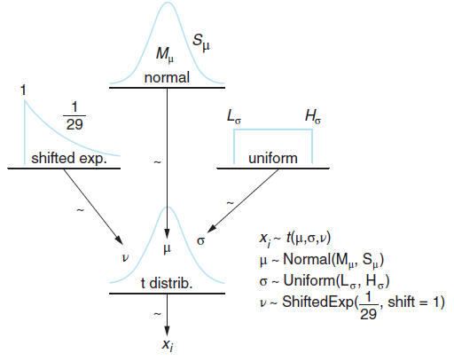
BEST 모형의 Graphical Representation. (출처: Bayesian Methods for Hackers)
{:.figure}
위의 그림에서 보듯이 BEST모형의 데이터에 해당하는 가 평균 와 표준편차 , 자유도가 인 t 분포 가능도를 가진다 가정합니다. 이를 위해 에 사전 분포를 다음과 같이 정의합니다.
사전 분포
, 사전 분포: 정규 분포
1 | pooled_mean = np.r_[duration_A,duration_B].mean() |
np.r_를 통해 duration_A와 duration_B를 한 array로 만들어서 합동 평균과 합동 표준편차를 구합니다.
tau는 정밀도 모수 (precision parameter)로 1/분산으로 정의됩니다.
pymc에서 Normal에 들어가는 모수가 평균과 정밀도이기 때문에 tau를 생성하였습니다.
또한 에 대한 사전 지식이 없기 때문에 무정보 사전 분포를 정의하는 것이 좋습니다. 이를 위해 정규 분포의 표준편차에 1000을 곱하여 분산을 크게 합니다. 따라서, tau에 1/pooled_std**2대신 1/(1000*pooled_std**2)로 씁니다.
사전 분포: 균등 분포
1 | std_A = pm.Uniform("std_A", pooled_std/1000, 1000*pooled_std) |
마찬가지로, 하한과 상한의 범위를 매우 크게 해서 무정보 사전 분포로 정의합니다. 이 때 주의할 점은 표준편차는 항상 양수이기 때문에 음수 값이 나오지 않도록 사전 분포를 정의해주어야 한다는 점입니다.
1 | nu_minus_1 = pm.Exponential("nu-1",1/29) |
여기서 자유도는 항상 1 이상이니 이동된 지수 분포를 이용해서 최소값이 0이 아닌 1이 되도록 정의하지 않았나 싶습니다…!
가능도: 비중심 t-분포 (Noncentral t-distribution)
가능도는 앞서 말씀드린 것처럼 t 분포를 사용합니다. 보통의 t 분포는 자유도 모수 만 고려하면 되지만 비중심 t-분포는 자유도 모수 외에도 location 모수 와 scale 모수 를 가집니다. p.d.f는 다음과 같이 정의됩니다.
1 | obs_A = pm.NoncentralT("obs_A",mu_A, 1/std_A**2, nu_minus_1+1, observed=True, value = duration_A) |
위 코드는 데이터인 duration_A가 duration_B가 비중심 t-분포를 따름을 보여주는 코드입니다.
MCMC
이제 사후 분포를 구하기 위해 MCMC sample을 생성합니다. 앞의 예제와 달리 사후 분포가 알려진 형태가 아니지만, pymc를 통해 가능도와 사전 분포만 정의해줘도 사후 분포의 sample을 추출할 수 있습니다.
1 | mcmc = pm.MCMC([obs_A,obs_B,mu_A,mu_B,std_A,std_B,nu_minus_1]) |
sample()의 인자는 iter, burn, thin으로 iter는 전체 MCMC를 돌리는 횟수, burn은 MCMC 초기 sample 중 버리는 갯수, thin은 MCMC sample을 추출하는 간격을 의미합니다. 만약 iter=a, burn=b, thin=c로 설정되어 있다면, 우리가 최종적으로 갖는 사후 분포 sample의 개수는 (a-b)/c입니다!
우리의 경우 25,000 sample 중 10,000개의 초기 sample을 버리고 매 sample을 추출하도록 세팅해 모수마다 15,000개의 sample을 가집니다.
trace()는 최종 MCMC sample들을 출력하는 함수입니다. [:]는 객체를 trace에서 ndarray로 바꿔주기 위한 작업입니다.
결과 해석
각 모수들의 사후 분포 sample을 히스토그램으로 그리면 다음과 같습니다.
1 | def _hist(data,label,**kwargs): |
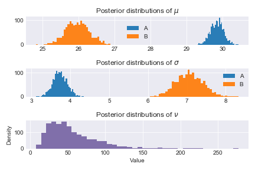
히스토그램에서 보듯이 A의 이용 시간이 B보다 훨씬 높음을 볼 수 있고, 우리가 세팅한 실제 평균 값인 mu_A=30, mu_B=26를 거의 비슷하게 추정함을 확인할 수 있습니다.
정확한 값을 보려면 utils.summary()를 사용합니다. 이 때 95% HPD (Highest Posterior Density) interval는 95%의 확률로 모수를 포함함을 의미합니다.
1 | mcmc.summary() |
이를 표로 정리하면 다음과 같습니다.
| 모수 | Mean | SD | MC Error | 95% HPD interval |
|---|---|---|---|---|
| 30.457 | 0.26 | 0.006 | [29.937,30.931] | |
| 25.505 | 0.447 | 0.01 | [24.612,26.363] | |
| 3.994 | 0.196 | 0.005 | [3.616,4.374] | |
| 6.828 | 0.347 | 0.011 | [6.144,7.483] | |
| 45.152 | 29.382 | 0.872 | [7.048,104.823] |
실제 값인 과 HPD interval을 비교해보면 모두 모수를 포함함을 확인할 수 있습니다.
MCMC 진단
MCMC sample이 잘 생성되었는 지 진단하는 방법은 pymc에 내장된 plot을 사용하면 됩니다. MCMC sample들의 trace plot, auto-correlation, histogram을 확인할 수 있습니다. 이에 대한 자세한 내용은 StatLect Markov Chain Monte Carlo (MCMC) diagnostics에서 확인할 수 있습니다.
이 진단이 필요한 이유는 MCMC sample들이 정상성을 띠어야 사후 분포을 잘 근사했다 말할 수 있기 때문입니다. 정상성에 대한 정의는 여기에서 더 확인하실 수 있습니다.
MCMC sample들이 잘 생성되었다면
1 | pm.Matplot.plot(mcmc) |
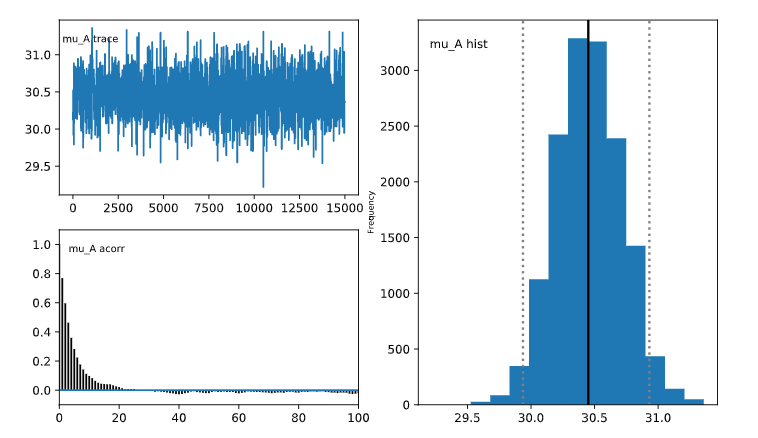
예를 들어 mu_A의 진단 플랏을 확인해보면
mu_A_trace에서 trace plot이 30과 32정도 사이에서 선이 위 아래로 왔다갔다 하는 모습을 보입니다.mu_A_acorr에서 auto correlation plot이 오른쪽으로 갈수록 자기상관계수가 줄어드는 모양을 보입니다.그 외의 모수들도 모두 진단했을 때 큰 문제가 없었기 때문에 사후 분포의 추론 결과를 믿을 수 있습니다.
<font color = 색상>와 </font>를 사용합니다."red"처럼 직접 색상명을 넣을 수도 있고"#ff0000"과 같은 hex code를 넣을 수도 있고,"rgb(255,0,0)"으로 RGB code를 제시해도 됩니다.1 | <font color='dodgerblue'> 예쁜 파랑 </font> |
<mark style='background-color: 색상명'>와 </mark>를 사용합니다. 회색
연한 회색
1 | <mark style='background-color: #24292e'><font color= "white"> 회색 </font></mark> |
파랑
연한 파랑
1 | <mark style='background-color: #0366d6'> 파랑 </mark> |
노랑
연한 노랑
1 | <mark style='background-color: #ffd33d'> 노랑 </mark> |
빨강
연한 빨강
1 | <mark style='background-color: #d73a48'> 빨강 </mark> |
초록
연한 초록
1 | <mark style='background-color: #28a745'> 초록 </mark> |
보라
연한 보라
1 | <mark style='background-color: #6f42c1'> 보라 </mark> |
이 명령어들을 외우지 않고 쓰는 방법은 VS Code의 Snippet을 이용하는 것입니다. Snippet에 대한 설명은 이 포스트에서 더 확인할 수 있습니다.
먼저 VS Code가 Git과 연동되어 있고, Markdown All in One의 Extension이 설치되어 있어야 합니다. Snippet을 설정하는 방법은 다음과 같습니다.
Ctrl+P를 누르면 검색 창이 나오는데 markdown.json을 쳐서 Enter를 누릅니다.
Ctrl+P를 눌렀을 때 나오는 VS Code검색창 화면
{:.figure}
markdown.json파일에서 Snippet을 다음과 같은 형식으로 추가합니다.highyel로 Snippet을 지정한다면"prefix"부분에 "highyel"을, "body"[]에 형광펜을 칠하는 명령인"<mark style='background-color: #fff5b1'> $1 </mark>"과 같이 적어줍니다. 여기서 $1은 커서의 자리를 지정합니다.1 | "highyel":{ |
markdown.json파일을 저장한 후 Snippet을 사용하고 싶을 때 highyel을 치고 Ctrl+Space를 누르면 다음과 같이 사용자가 지정한 Snippet이 화면에 나오고 Enter를 치면 전체 코드인 <mark style='background-color: #fff5b1'> </mark>가 나옵니다.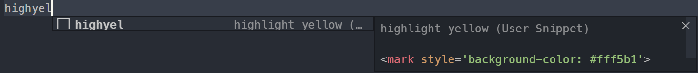
highyel + Ctrl + Space를 쳤을 때 나오는 화면이 외에도 복잡한 수식 기호나 테이블 생성하는 코드들을 Snippet으로 만들어 놓으면 오타 없이 쉽게 쓸 수 있습니다.
:smile:과 같이 따옴표 2개 안에 명령어를 넣습니다._config.yml에서 plugins부분을 찾아 jemoji를 추가합니다.1 | plugins: |
People
:bowtie: :bowtie: |
😄 :smile: |
😆 :laughing: |
|---|---|---|
😊 :blush: |
😃 :smiley: |
☺️ :relaxed: |
😏 :smirk: |
😍 :heart_eyes: |
😘 :kissing_heart: |
😚 :kissing_closed_eyes: |
😳 :flushed: |
😌 :relieved: |
😆 :satisfied: |
😁 :grin: |
😉 :wink: |
😜 :stuck_out_tongue_winking_eye: |
😝 :stuck_out_tongue_closed_eyes: |
😀 :grinning: |
😗 :kissing: |
😙 :kissing_smiling_eyes: |
😛 :stuck_out_tongue: |
😴 :sleeping: |
😟 :worried: |
😦 :frowning: |
😧 :anguished: |
😮 :open_mouth: |
😬 :grimacing: |
😕 :confused: |
😯 :hushed: |
😑 :expressionless: |
😒 :unamused: |
😅 :sweat_smile: |
😓 :sweat: |
😥 :disappointed_relieved: |
😩 :weary: |
😔 :pensive: |
😞 :disappointed: |
😖 :confounded: |
😨 :fearful: |
😰 :cold_sweat: |
😣 :persevere: |
😢 :cry: |
😭 :sob: |
😂 :joy: |
😲 :astonished: |
😱 :scream: |
:neckbeard: :neckbeard: |
😫 :tired_face: |
😠 :angry: |
😡 :rage: |
😤 :triumph: |
😪 :sleepy: |
😋 :yum: |
😷 :mask: |
😎 :sunglasses: |
😵 :dizzy_face: |
👿 :imp: |
😈 :smiling_imp: |
😐 :neutral_face: |
😶 :no_mouth: |
😇 :innocent: |
👽 :alien: |
💛 :yellow_heart: |
💙 :blue_heart: |
💜 :purple_heart: |
❤️ :heart: |
💚 :green_heart: |
💔 :broken_heart: |
💓 :heartbeat: |
💗 :heartpulse: |
💕 :two_hearts: |
💞 :revolving_hearts: |
💘 :cupid: |
💖 :sparkling_heart: |
✨ :sparkles: |
⭐ :star: |
🌟 :star2: |
💫 :dizzy: |
💥 :boom: |
💥 :collision: |
💢 :anger: |
❗ :exclamation: |
❓ :question: |
❕ :grey_exclamation: |
❔ :grey_question: |
💤 :zzz: |
💨 :dash: |
💦 :sweat_drops: |
🎶 :notes: |
🎵 :musical_note: |
🔥 :fire: |
💩 :hankey: |
💩 :poop: |
💩 :shit: |
👍 :+1: |
👍 :thumbsup: |
👎 :-1: |
👎 :thumbsdown: |
👌 :ok_hand: |
👊 :punch: |
👊 :facepunch: |
✊ :fist: |
✌️ :v: |
👋 :wave: |
✋ :hand: |
✋ :raised_hand: |
👐 :open_hands: |
☝️ :point_up: |
👇 :point_down: |
👈 :point_left: |
👉 :point_right: |
🙌 :raised_hands: |
🙏 :pray: |
👆 :point_up_2: |
👏 :clap: |
💪 :muscle: |
🤘 :metal: |
🖕 :fu: |
🚶 :walking: |
🏃 :runner: |
🏃 :running: |
👫 :couple: |
👪 :family: |
👬 :two_men_holding_hands: |
👭 :two_women_holding_hands: |
💃 :dancer: |
👯 :dancers: |
🙆♀️ :ok_woman: |
🙅 :no_good: |
💁 :information_desk_person: |
🙋 :raising_hand: |
👰♀️ :bride_with_veil: |
:person_with_pouting_face: :person_with_pouting_face: |
:person_frowning: :person_frowning: |
🙇 :bow: |
💏 :couplekiss: |
💑 :couple_with_heart: |
💆 :massage: |
💇 :haircut: |
💅 :nail_care: |
👦 :boy: |
👧 :girl: |
👩 :woman: |
👨 :man: |
👶 :baby: |
👵 :older_woman: |
👴 :older_man: |
:person_with_blond_hair: :person_with_blond_hair: |
👲 :man_with_gua_pi_mao: |
👳♂️ :man_with_turban: |
👷 :construction_worker: |
👮 :cop: |
👼 :angel: |
👸 :princess: |
😺 :smiley_cat: |
😸 :smile_cat: |
😻 :heart_eyes_cat: |
😽 :kissing_cat: |
😼 :smirk_cat: |
🙀 :scream_cat: |
😿 :crying_cat_face: |
😹 :joy_cat: |
😾 :pouting_cat: |
👹 :japanese_ogre: |
👺 :japanese_goblin: |
🙈 :see_no_evil: |
🙉 :hear_no_evil: |
🙊 :speak_no_evil: |
💂♂️ :guardsman: |
💀 :skull: |
🐾 :feet: |
👄 :lips: |
💋 :kiss: |
💧 :droplet: |
👂 :ear: |
👀 :eyes: |
👃 :nose: |
👅 :tongue: |
💌 :love_letter: |
👤 :bust_in_silhouette: |
👥 :busts_in_silhouette: |
💬 :speech_balloon: |
💭 :thought_balloon: |
:feelsgood: :feelsgood: |
:finnadie: :finnadie: |
:goberserk: :goberserk: |
:godmode: :godmode: |
:hurtrealbad: :hurtrealbad: |
:rage1: :rage1: |
:rage2: :rage2: |
:rage3: :rage3: |
:rage4: :rage4: |
:suspect: :suspect: |
:trollface: :trollface: |
Nature
☀️ :sunny: |
☔ :umbrella: |
☁️ :cloud: |
|---|---|---|
❄️ :snowflake: |
⛄ :snowman: |
⚡ :zap: |
🌀 :cyclone: |
🌁 :foggy: |
🌊 :ocean: |
🐱 :cat: |
🐶 :dog: |
🐭 :mouse: |
🐹 :hamster: |
🐰 :rabbit: |
🐺 :wolf: |
🐸 :frog: |
🐯 :tiger: |
🐨 :koala: |
🐻 :bear: |
🐷 :pig: |
🐽 :pig_nose: |
🐮 :cow: |
🐗 :boar: |
🐵 :monkey_face: |
🐒 :monkey: |
🐴 :horse: |
🐎 :racehorse: |
🐫 :camel: |
🐑 :sheep: |
🐘 :elephant: |
🐼 :panda_face: |
🐍 :snake: |
🐦 :bird: |
🐤 :baby_chick: |
🐥 :hatched_chick: |
🐣 :hatching_chick: |
🐔 :chicken: |
🐧 :penguin: |
🐢 :turtle: |
🐛 :bug: |
🐝 :honeybee: |
🐜 :ant: |
🪲 :beetle: |
🐌 :snail: |
🐙 :octopus: |
🐠 :tropical_fish: |
🐟 :fish: |
🐳 :whale: |
🐋 :whale2: |
🐬 :dolphin: |
🐄 :cow2: |
🐏 :ram: |
🐀 :rat: |
🐃 :water_buffalo: |
🐅 :tiger2: |
🐇 :rabbit2: |
🐉 :dragon: |
🐐 :goat: |
🐓 :rooster: |
🐕 :dog2: |
🐖 :pig2: |
🐁 :mouse2: |
🐂 :ox: |
🐲 :dragon_face: |
🐡 :blowfish: |
🐊 :crocodile: |
🐪 :dromedary_camel: |
🐆 :leopard: |
🐈 :cat2: |
🐩 :poodle: |
🐾 :paw_prints: |
💐 :bouquet: |
🌸 :cherry_blossom: |
🌷 :tulip: |
🍀 :four_leaf_clover: |
🌹 :rose: |
🌻 :sunflower: |
🌺 :hibiscus: |
🍁 :maple_leaf: |
🍃 :leaves: |
🍂 :fallen_leaf: |
🌿 :herb: |
🍄 :mushroom: |
🌵 :cactus: |
🌴 :palm_tree: |
🌲 :evergreen_tree: |
🌳 :deciduous_tree: |
🌰 :chestnut: |
🌱 :seedling: |
🌼 :blossom: |
🌾 :ear_of_rice: |
🐚 :shell: |
🌐 :globe_with_meridians: |
🌞 :sun_with_face: |
🌝 :full_moon_with_face: |
🌚 :new_moon_with_face: |
🌑 :new_moon: |
🌒 :waxing_crescent_moon: |
🌓 :first_quarter_moon: |
🌔 :waxing_gibbous_moon: |
🌕 :full_moon: |
🌖 :waning_gibbous_moon: |
🌗 :last_quarter_moon: |
🌘 :waning_crescent_moon: |
🌜 :last_quarter_moon_with_face: |
🌛 :first_quarter_moon_with_face: |
🌔 :moon: |
🌍 :earth_africa: |
🌎 :earth_americas: |
🌏 :earth_asia: |
🌋 :volcano: |
🌌 :milky_way: |
⛅ :partly_sunny: |
:octocat: :octocat: |
:squirrel: :squirrel: |
Objects
🎍 :bamboo: |
💝 :gift_heart: |
🎎 :dolls: |
|---|---|---|
🎒 :school_satchel: |
🎓 :mortar_board: |
🎏 :flags: |
🎆 :fireworks: |
🎇 :sparkler: |
🎐 :wind_chime: |
🎑 :rice_scene: |
🎃 :jack_o_lantern: |
👻 :ghost: |
🎅 :santa: |
🎄 :christmas_tree: |
🎁 :gift: |
🔔 :bell: |
🔕 :no_bell: |
🎋 :tanabata_tree: |
🎉 :tada: |
🎊 :confetti_ball: |
🎈 :balloon: |
🔮 :crystal_ball: |
💿 :cd: |
📀 :dvd: |
💾 :floppy_disk: |
📷 :camera: |
📹 :video_camera: |
🎥 :movie_camera: |
💻 :computer: |
📺 :tv: |
📱 :iphone: |
☎️ :phone: |
☎️ :telephone: |
📞 :telephone_receiver: |
📟 :pager: |
📠 :fax: |
💽 :minidisc: |
📼 :vhs: |
🔉 :sound: |
🔈 :speaker: |
🔇 :mute: |
📢 :loudspeaker: |
📣 :mega: |
⌛ :hourglass: |
⏳ :hourglass_flowing_sand: |
⏰ :alarm_clock: |
⌚ :watch: |
📻 :radio: |
📡 :satellite: |
➿ :loop: |
🔍 :mag: |
🔎 :mag_right: |
🔓 :unlock: |
🔒 :lock: |
🔏 :lock_with_ink_pen: |
🔐 :closed_lock_with_key: |
🔑 :key: |
💡 :bulb: |
🔦 :flashlight: |
🔆 :high_brightness: |
🔅 :low_brightness: |
🔌 :electric_plug: |
🔋 :battery: |
📲 :calling: |
📧 :email: |
📫 :mailbox: |
📮 :postbox: |
🛀 :bath: |
🛁 :bathtub: |
🚿 :shower: |
🚽 :toilet: |
🔧 :wrench: |
🔩 :nut_and_bolt: |
🔨 :hammer: |
💺 :seat: |
💰 :moneybag: |
💴 :yen: |
💵 :dollar: |
💷 :pound: |
💶 :euro: |
💳 :credit_card: |
💸 :money_with_wings: |
📧 :e-mail: |
📥 :inbox_tray: |
📤 :outbox_tray: |
✉️ :envelope: |
📨 :incoming_envelope: |
📯 :postal_horn: |
📪 :mailbox_closed: |
📬 :mailbox_with_mail: |
📭 :mailbox_with_no_mail: |
🚪 :door: |
🚬 :smoking: |
💣 :bomb: |
🔫 :gun: |
🔪 :hocho: |
💊 :pill: |
💉 :syringe: |
📄 :page_facing_up: |
📃 :page_with_curl: |
📑 :bookmark_tabs: |
📊 :bar_chart: |
📈 :chart_with_upwards_trend: |
📉 :chart_with_downwards_trend: |
📜 :scroll: |
📋 :clipboard: |
📆 :calendar: |
📅 :date: |
📇 :card_index: |
📁 :file_folder: |
📂 :open_file_folder: |
✂️ :scissors: |
📌 :pushpin: |
📎 :paperclip: |
✒️ :black_nib: |
✏️ :pencil2: |
📏 :straight_ruler: |
📐 :triangular_ruler: |
📕 :closed_book: |
📗 :green_book: |
📘 :blue_book: |
📙 :orange_book: |
📓 :notebook: |
📔 :notebook_with_decorative_cover: |
📒 :ledger: |
📚 :books: |
🔖 :bookmark: |
📛 :name_badge: |
🔬 :microscope: |
🔭 :telescope: |
📰 :newspaper: |
🏈 :football: |
🏀 :basketball: |
⚽ :soccer: |
⚾ :baseball: |
🎾 :tennis: |
🎱 :8ball: |
🏉 :rugby_football: |
🎳 :bowling: |
⛳ :golf: |
🚵 :mountain_bicyclist: |
🚴 :bicyclist: |
🏇 :horse_racing: |
🏂 :snowboarder: |
🏊 :swimmer: |
🏄 :surfer: |
🎿 :ski: |
♠️ :spades: |
♥️ :hearts: |
♣️ :clubs: |
♦️ :diamonds: |
💎 :gem: |
💍 :ring: |
🏆 :trophy: |
🎼 :musical_score: |
🎹 :musical_keyboard: |
🎻 :violin: |
👾 :space_invader: |
🎮 :video_game: |
🃏 :black_joker: |
🎴 :flower_playing_cards: |
🎲 :game_die: |
🎯 :dart: |
🀄 :mahjong: |
🎬 :clapper: |
📝 :memo: |
📝 :pencil: |
📖 :book: |
🎨 :art: |
🎤 :microphone: |
🎧 :headphones: |
🎺 :trumpet: |
🎷 :saxophone: |
🎸 :guitar: |
👞 :shoe: |
👡 :sandal: |
👠 :high_heel: |
💄 :lipstick: |
👢 :boot: |
👕 :shirt: |
👕 :tshirt: |
👔 :necktie: |
👚 :womans_clothes: |
👗 :dress: |
🎽 :running_shirt_with_sash: |
👖 :jeans: |
👘 :kimono: |
👙 :bikini: |
🎀 :ribbon: |
🎩 :tophat: |
👑 :crown: |
👒 :womans_hat: |
👞 :mans_shoe: |
🌂 :closed_umbrella: |
💼 :briefcase: |
👜 :handbag: |
👝 :pouch: |
👛 :purse: |
👓 :eyeglasses: |
🎣 :fishing_pole_and_fish: |
☕ :coffee: |
🍵 :tea: |
🍶 :sake: |
🍼 :baby_bottle: |
🍺 :beer: |
🍻 :beers: |
🍸 :cocktail: |
🍹 :tropical_drink: |
🍷 :wine_glass: |
🍴 :fork_and_knife: |
🍕 :pizza: |
🍔 :hamburger: |
🍟 :fries: |
🍗 :poultry_leg: |
🍖 :meat_on_bone: |
🍝 :spaghetti: |
🍛 :curry: |
🍤 :fried_shrimp: |
🍱 :bento: |
🍣 :sushi: |
🍥 :fish_cake: |
🍙 :rice_ball: |
🍘 :rice_cracker: |
🍚 :rice: |
🍜 :ramen: |
🍲 :stew: |
🍢 :oden: |
🍡 :dango: |
🥚 :egg: |
🍞 :bread: |
🍩 :doughnut: |
🍮 :custard: |
🍦 :icecream: |
🍨 :ice_cream: |
🍧 :shaved_ice: |
🎂 :birthday: |
🍰 :cake: |
🍪 :cookie: |
🍫 :chocolate_bar: |
🍬 :candy: |
🍭 :lollipop: |
🍯 :honey_pot: |
🍎 :apple: |
🍏 :green_apple: |
🍊 :tangerine: |
🍋 :lemon: |
🍒 :cherries: |
🍇 :grapes: |
🍉 :watermelon: |
🍓 :strawberry: |
🍑 :peach: |
🍈 :melon: |
🍌 :banana: |
🍐 :pear: |
🍍 :pineapple: |
🍠 :sweet_potato: |
🍆 :eggplant: |
🍅 :tomato: |
🌽 :corn: |
Places
🏠 :house: |
🏡 :house_with_garden: |
🏫 :school: |
|---|---|---|
🏢 :office: |
🏣 :post_office: |
🏥 :hospital: |
🏦 :bank: |
🏪 :convenience_store: |
🏩 :love_hotel: |
🏨 :hotel: |
💒 :wedding: |
⛪ :church: |
🏬 :department_store: |
🏤 :european_post_office: |
🌇 :city_sunrise: |
🌆 :city_sunset: |
🏯 :japanese_castle: |
🏰 :european_castle: |
⛺ :tent: |
🏭 :factory: |
🗼 :tokyo_tower: |
🗾 :japan: |
🗻 :mount_fuji: |
🌄 :sunrise_over_mountains: |
🌅 :sunrise: |
🌠 :stars: |
🗽 :statue_of_liberty: |
🌉 :bridge_at_night: |
🎠 :carousel_horse: |
🌈 :rainbow: |
🎡 :ferris_wheel: |
⛲ :fountain: |
🎢 :roller_coaster: |
🚢 :ship: |
🚤 :speedboat: |
⛵ :boat: |
⛵ :sailboat: |
🚣 :rowboat: |
⚓ :anchor: |
🚀 :rocket: |
✈️ :airplane: |
🚁 :helicopter: |
🚂 :steam_locomotive: |
🚊 :tram: |
🚞 :mountain_railway: |
🚲 :bike: |
🚡 :aerial_tramway: |
🚟 :suspension_railway: |
🚠 :mountain_cableway: |
🚜 :tractor: |
🚙 :blue_car: |
🚘 :oncoming_automobile: |
🚗 :car: |
🚗 :red_car: |
🚕 :taxi: |
🚖 :oncoming_taxi: |
🚛 :articulated_lorry: |
🚌 :bus: |
🚍 :oncoming_bus: |
🚨 :rotating_light: |
🚓 :police_car: |
🚔 :oncoming_police_car: |
🚒 :fire_engine: |
🚑 :ambulance: |
🚐 :minibus: |
🚚 :truck: |
🚋 :train: |
🚉 :station: |
🚆 :train2: |
🚅 :bullettrain_front: |
🚄 :bullettrain_side: |
🚈 :light_rail: |
🚝 :monorail: |
🚃 :railway_car: |
🚎 :trolleybus: |
🎫 :ticket: |
⛽ :fuelpump: |
🚦 :vertical_traffic_light: |
🚥 :traffic_light: |
⚠️ :warning: |
🚧 :construction: |
🔰 :beginner: |
🏧 :atm: |
🎰 :slot_machine: |
🚏 :busstop: |
💈 :barber: |
♨️ :hotsprings: |
🏁 :checkered_flag: |
🎌 :crossed_flags: |
🏮 :izakaya_lantern: |
🗿 :moyai: |
🎪 :circus_tent: |
🎭 :performing_arts: |
📍 :round_pushpin: |
🚩 :triangular_flag_on_post: |
🇯🇵 :jp: |
🇰🇷 :kr: |
🇨🇳 :cn: |
🇺🇸 :us: |
🇫🇷 :fr: |
🇪🇸 :es: |
🇮🇹 :it: |
🇷🇺 :ru: |
🇬🇧 :gb: |
🇬🇧 :uk: |
🇩🇪 :de: |
Symbols
1️⃣ :one: |
2️⃣ :two: |
3️⃣ :three: |
|---|---|---|
4️⃣ :four: |
5️⃣ :five: |
6️⃣ :six: |
7️⃣ :seven: |
8️⃣ :eight: |
9️⃣ :nine: |
🔟 :keycap_ten: |
🔢 :1234: |
0️⃣ :zero: |
#️⃣ :hash: |
🔣 :symbols: |
◀️ :arrow_backward: |
⬇️ :arrow_down: |
▶️ :arrow_forward: |
⬅️ :arrow_left: |
🔠 :capital_abcd: |
🔡 :abcd: |
🔤 :abc: |
↙️ :arrow_lower_left: |
↘️ :arrow_lower_right: |
➡️ :arrow_right: |
⬆️ :arrow_up: |
↖️ :arrow_upper_left: |
↗️ :arrow_upper_right: |
⏬ :arrow_double_down: |
⏫ :arrow_double_up: |
🔽 :arrow_down_small: |
⤵️ :arrow_heading_down: |
⤴️ :arrow_heading_up: |
↩️ :leftwards_arrow_with_hook: |
↪️ :arrow_right_hook: |
↔️ :left_right_arrow: |
↕️ :arrow_up_down: |
🔼 :arrow_up_small: |
🔃 :arrows_clockwise: |
🔄 :arrows_counterclockwise: |
⏪ :rewind: |
⏩ :fast_forward: |
ℹ️ :information_source: |
🆗 :ok: |
🔀 :twisted_rightwards_arrows: |
🔁 :repeat: |
🔂 :repeat_one: |
🆕 :new: |
🔝 :top: |
🆙 :up: |
🆒 :cool: |
🆓 :free: |
🆖 :ng: |
🎦 :cinema: |
🈁 :koko: |
📶 :signal_strength: |
:u5272: :u5272: |
:u5408: :u5408: |
:u55b6: :u55b6: |
:u6307: :u6307: |
:u6708: :u6708: |
:u6709: :u6709: |
🈵 :u6e80: |
:u7121: :u7121: |
:u7533: :u7533: |
:u7a7a: :u7a7a: |
:u7981: :u7981: |
🈂️ :sa: |
🚻 :restroom: |
🚹 :mens: |
🚺 :womens: |
🚼 :baby_symbol: |
🚭 :no_smoking: |
🅿️ :parking: |
♿ :wheelchair: |
🚇 :metro: |
🛄 :baggage_claim: |
🉑 :accept: |
🚾 :wc: |
🚰 :potable_water: |
🚮 :put_litter_in_its_place: |
㊙️ :secret: |
㊗️ :congratulations: |
Ⓜ️ :m: |
🛂 :passport_control: |
🛅 :left_luggage: |
🛃 :customs: |
🉐 :ideograph_advantage: |
🆑 :cl: |
🆘 :sos: |
🆔 :id: |
🚫 :no_entry_sign: |
🔞 :underage: |
📵 :no_mobile_phones: |
🚯 :do_not_litter: |
🚱 :non-potable_water: |
🚳 :no_bicycles: |
🚷 :no_pedestrians: |
🚸 :children_crossing: |
⛔ :no_entry: |
✳️ :eight_spoked_asterisk: |
✴️ :eight_pointed_black_star: |
💟 :heart_decoration: |
🆚 :vs: |
📳 :vibration_mode: |
📴 :mobile_phone_off: |
💹 :chart: |
💱 :currency_exchange: |
♈ :aries: |
♉ :taurus: |
♊ :gemini: |
♋ :cancer: |
♌ :leo: |
♍ :virgo: |
♎ :libra: |
♏ :scorpius: |
♐ :sagittarius: |
♑ :capricorn: |
♒ :aquarius: |
♓ :pisces: |
⛎ :ophiuchus: |
🔯 :six_pointed_star: |
❎ :negative_squared_cross_mark: |
🅰️ :a: |
🅱️ :b: |
🆎 :ab: |
🅾️ :o2: |
💠 :diamond_shape_with_a_dot_inside: |
♻️ :recycle: |
🔚 :end: |
🔛 :on: |
🔜 :soon: |
🕐 :clock1: |
🕜 :clock130: |
🕙 :clock10: |
🕥 :clock1030: |
🕚 :clock11: |
🕦 :clock1130: |
🕛 :clock12: |
🕧 :clock1230: |
🕑 :clock2: |
🕝 :clock230: |
🕒 :clock3: |
🕞 :clock330: |
🕓 :clock4: |
🕟 :clock430: |
🕔 :clock5: |
🕠 :clock530: |
🕕 :clock6: |
🕡 :clock630: |
🕖 :clock7: |
🕢 :clock730: |
🕗 :clock8: |
🕣 :clock830: |
🕘 :clock9: |
🕤 :clock930: |
💲 :heavy_dollar_sign: |
©️ :copyright: |
®️ :registered: |
™️ :tm: |
❌ :x: |
❗ :heavy_exclamation_mark: |
‼️ :bangbang: |
⁉️ :interrobang: |
⭕ :o: |
✖️ :heavy_multiplication_x: |
➕ :heavy_plus_sign: |
➖ :heavy_minus_sign: |
➗ :heavy_division_sign: |
💮 :white_flower: |
💯 :100: |
✔️ :heavy_check_mark: |
☑️ :ballot_box_with_check: |
🔘 :radio_button: |
🔗 :link: |
➰ :curly_loop: |
〰️ :wavy_dash: |
〽️ :part_alternation_mark: |
🔱 :trident: |
:black_square: :black_square: |
:white_square: :white_square: |
✅ :white_check_mark: |
🔲 :black_square_button: |
🔳 :white_square_button: |
⚫ :black_circle: |
⚪ :white_circle: |
🔴 :red_circle: |
🔵 :large_blue_circle: |
🔷 :large_blue_diamond: |
🔶 :large_orange_diamond: |
🔹 :small_blue_diamond: |
🔸 :small_orange_diamond: |
🔺 :small_red_triangle: |
🔻 :small_red_triangle_down: |
:shipit: :shipit: |
대학원에 와서 2년간 최대한 많이 배우자는 생각에 가장 많이 배울 수 있는 곳 (a.k.a.가장 많이 일하는 곳)으로 연구실을 정했습니다. 이 선택을 후회한 적도 많았지만, 결과적으로 보면 값진 시간이라 생각합니다.
후회했던 이유는 공부 외의 일도 많았기 때문입니다. 행정 조교, 베이지안 및 수리통계학 조교, 확률 책 집필 보조, 논문 투고 등 학기가 가면 갈수록 더 바빠져만 가서 우울한 적도 있었습니다. 그러나, 지나고 나서 보니 이걸 다 해냈다는 사실이 뿌듯하고 정신적으로도 큰 도움이 되었습니다. 사회에 나가서도 제가 원하는 일만 할 수 있는 게 아니기 때문에 미리 경험했다고 생각하니 마음이 편했습니다.
확률론 책 집필 보조로 thanks to 에 등극!
{:.figure}
그렇지만 이런 것들을 배울 수 있었기에 대학원을 헛되이 보내지 않았다 생각합니다.
dplyr, lubridate을 통한 데이터 전처리와 랜덤 포레스트, SVM, 신경망 모형을 적용하는 방법에 대해 배웠습니다. 또, 졸업 논문을 쓸 때도 국민건강영양조사 자료를 분석하면서 주제에 맞는 필요한 변수들을 선정하고 변환하며 베이지안 준모수 순서형, 베타, 이항형 모형을 적합했습니다.아쉬운 건 제가 공부하고 싶은 분야를 많이 못 했다는 점이고, 가끔 번아웃으로 시간을 낭비할 때가 있었다는 점이 아닌가 싶습니다. 대학원 때 했던 공부들을 블로그에 정리하면 좋을 것 같다는 생각이 듭니다. ㅎㅎㅎ
지금 와서 보면 부족한 게 많은데 운 좋게도 두 곳에서 합격했었습니다. 하나는 제조사 산학 장학생, 다른 하나는 통신사. 이때의 저는 조금 거만했던 것 같네요…ㅋㅋㅋㅋ 대학원 때 고생을 모두 보상받는다고 생각했고 (여기까진 괜찮으나) 그만큼 실력이 있다고 생각했습니다… (여기부터 거만하죠)
통신사에 가야겠다고 생각하고 산학 장학생을 포기했는데, “최종 후 프로세스”(인사 담당자 인터뷰)에서 불합격 통보를 받았습니다. 세 번의 면접을 붙고 그 후 프로세스 때문에 떨어지니 너무 허탈하고 억울했습니다.
그러나 한 달간 곰곰이 생각해보니 인터뷰 상에서 제가 솔직하지 못했던 대답들이 있었습니다. 예를 들어,
Q. 스트레스를 받으면 어떻게 관리하세요?
A. 고민이 있어도 잘 까먹는 편입니다.
라 했는데 최근 스트레스가 많아 잠을 잘 못 자고 고민하는 걸 보면 이 대답이 틀렸음을 깨달았습니다.
그보단 스트레스 근원을 살피고 해결책을 찾으려 노력하는 게 제 방법임을 깨달았습니다. 또, 이러한 해결책을 찾을 때 혼자 동굴에 들어가 생각하는 것보단 주위 사람들의 도움과 조언을 진심으로 받아들이는 게 중요함을 깨닫는 중입니다.
나중에 시간이 지나면 이 시점이 터닝포인트가 되길 진심으로 바랍니다. 그러기 위해선 제 의지가 필요하기에 이 글로 단단히 다져놓을 생각입니다.
아직 방황 중입니다. 구체적으로 어떤 일을 제가 좋아하고 어떤 공부를 더 해야 하는지 계속 찾고 있습니다. 그래도 글또의 회장님 덕분에 진로 고민도 꾸준히 공유하며 제 진로를 구체화하고 있습니다.
조바심도 납니다. "다른 친구들은 다 잘 되는데 난 왜 이럴까?"라 생각하면 우울한 적이 많았습니다. 그러나 이게 제 삶이고, 그렇기 때문에 잘 이끌어가는 게 제 의무니까 꾸준히 노력하며 살고자 합니다. 조바심이 날 땐 생각을 멈추고 5초 이내에 실행하라는 말을 본 적이 있는데 걱정만 하지 말고 실행하는 삶을 살고자 합니다. 헿
저는 위베어베어스를 좋아하는데 이 그림이 제 삶과 비슷하다고 생각합니다. 위로 올라갈수록 버전이 업그레이드된다고 가정했을 때, 지금의 저는 판다와 그리즐리 (갈색곰) 사이인 ver 2.1. 정도 되는 것 같습니다. 각 곰에 대한 설명은 다음과 같습니다.
최근 글 쓰는 개발자 모임인 "글또"에 4기로 활동하게 되었습니다. 예전부터 배운 것에 대해 글쓰는 것에 대한 선망은 있었으나 막상 실천을 못 했었는데 마침 변성윤님의 모집 공고를 보고 가입하게 되었습니다.
실제로 들어와 보니 현직에 계시는 개발자분들도 많고 끊임없이 공부하고자 하는 자세를 가지신 분들로 구성돼있어 제게 “성장할 수 있는” 큰 동기를 심어주셨기 때문에 매우 만족입니다.
초심을 잃지 않고 끝까지 모임 및 글쓰기 활동을 꾸준히 하는 게 목표입니다 😄 . 크게 2개의 목표를 세웠습니다.
글또의 취업컨설팅에서 조언을 받고 제가 쓰고 싶은 글에 대해 고민해보았는데요. 후보군을 이렇게 정해놓았습니다.
| 주제 | 참조 |
|---|---|
| 1. MongoDB 강좌 내용 정리 | Inflearn NoSQL/DB(몽고DB)기초와 파이썬활용 강좌, 잔재미 코딩 |
| 2. (Bayesian) A/B Testing 공부 | 프로그래머를 위한 베이지안 with 파이썬, [Udacity A/B testing 강의](https://[a-z.-/0-9%]*) |
| 3. 게임 상 or 채팅 환경에서의 이상 / 어뷰징 탐지 알고리즘 공부 | NDC 2016 김정주님 발표, Sualab Anomaly Detection 소개글 |
| {:.scroll-table} |
공부 순서는 Bayesian A/B Testing (2월) MongoDB + 이상 탐지 (3~6월) A/B Testing (7~8월)이 되지 않을까 싶습니다. 시간이 부족해서 계획대로 다 못할 수는 있지만 중간 계획을 세부적으로 세우고 수정하면서 최대한 다 공부한 것을 글로 녹여내는 것이 목표입니다.
데이터가 재밌는 곳을 1순위로 삼다보니 교집합이 적은 분야들에 관심이 많이 갔습니다. 현재로썬 카카오와 같은 chatting based 회사, 게임 회사, 모빌리티, 제조사를 고려하고 있는데요. 취업 컨설팅에서 이들의 우선순위를 정하고, 그 순서의 반대로 지원해보라는 조언을 받았습니다.
해당 회사에서 어떤 분석을 하고 싶은 지? 를 생각해봤을 때 이 우선순위를 더 구체화할 수 있을 것 같습니다 😆
아직 공부할 분야가 많아 6개월 내 취업을 할 수 있을 지 잘 모르겠습니다. 수입원이 안정적으로 확보된다면 더 호흡을 길게 갖고 취업 준비를 하는 게 좋을 것 같다는 생각이 듭니다.
최근 수입원이 없다 보니 자꾸 현실적인 고민도 하고 매우 큰 스트레스를 받고 있습니다. 공부를 할 시간을 확보하기 위해서 시간이 많이 안 드는 수입원에 대해 고민하고 있습니다.
최근 남자친구가 온라인 청년센터에서 청년구직활동지원금을 신청해보라고 알려줬습니다! 저도 해당이 되는 것 같아 바로 신청을 했는데 2월 25일까지 지원하면 3월 중순에 지원을 받는다 합니다.자세한 정보는 링크를 통해 확인하시길 바랍니다.
청년구직활동지원금 안내
{:.figure}
다만, 청년구직활동지원금은 계좌 이체가 불가능하기 때문에 핸드폰 요금과 같은 고정비용을 해결해야 합니다.
그래서 최근 숨고에서 통계분석 고수로 등록해서 돈을 벌까합니다. 아직 감감무소식…이지만 한 번 의뢰를 맡고 나면 좀 나아질 것이라는 희망이 있습니다. 잘 안 되면 3월 달부터는 아르바이트나 인턴을 찾아보려 합니다.
운동을 하면 잡생각도 사라지고 잠을 푹 자기 때문에 취준생인 제게 꼭 필요하다 생각했습니다.
최근 수영을 배우면서 마음의 안정을 찾았는데 망할 코로나 때문에 수영을 못 배우고 있습니다 😭. 만약 코로나가 장기전에 돌입한다면 요가와 필라테스를 홈트레이닝으로 틈틈이 해야지 않나 싶습니다.
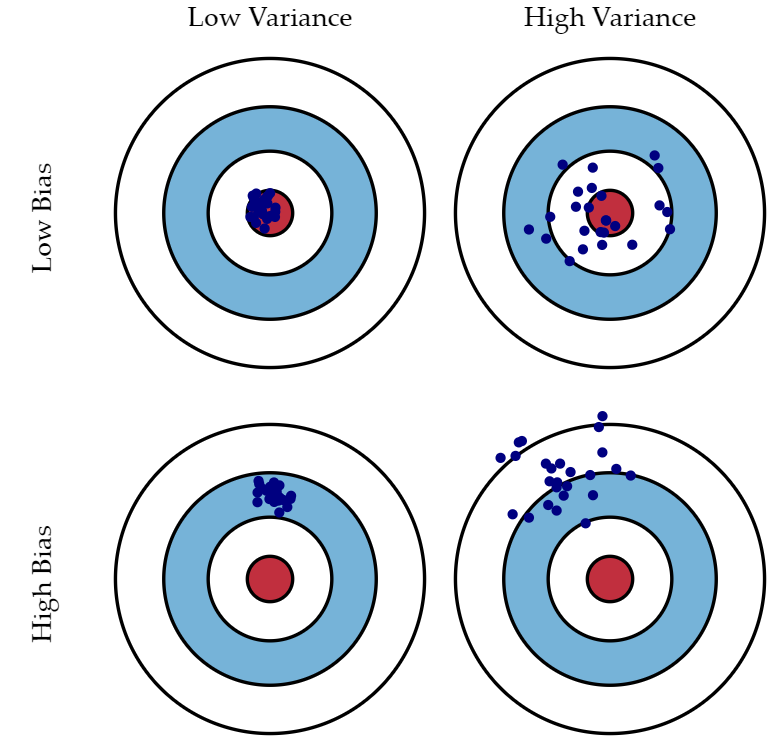
는 의 어떤 모르는 함수꼴로 표현된다 가정합시다 (단순 회귀라면 라 놓을 수 있습니다).
여기서 우리가 최소화하고자 하는 손실 함수 (Loss function)는 예측 오차의 제곱 (Squared Prediction Error)을 최소화하는 것임으로 다음과 같이 정의됩니다.
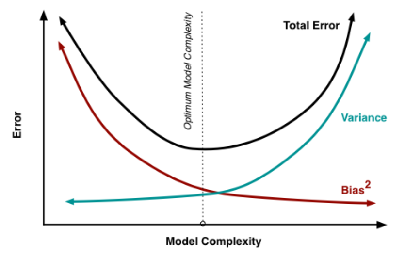
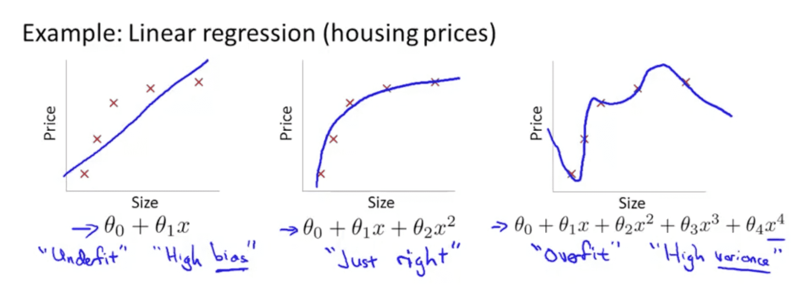
로 제한합니다.
where .
유도 과정은 여기를 참조하세요.
가 작을수록, 가 클수록 모수공간에 대한 제약이 세짐을 의미하고 를 L2 penalty라 부릅니다.
이 제약 조건을 그림으로 이해하면,
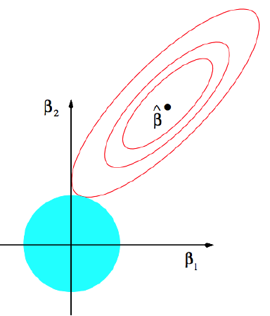
로 제한합니다.
where .
마찬가지로 가 작을수록, 가 클수록 모수공간에 대한 제약이 세짐을 의미하고 를 L1 penalty라 부릅니다.
이 제약 조건을 그림으로 이해하면,
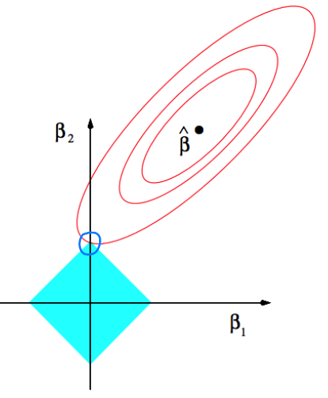
참고로 이렇게 목적함수(target function)가 이차식(convex quadratic)이고, 제약함수(constraint functions)가 affine한 볼록 함수(convex function)을 최적화하는 문제를 **Quadratic Programming (QP)**라 칭합니다.
이를 하나의 operator로 표현하면 Soft-thresholding operator $$S_{\lambda} (x)$$로 표현할 수 있고,그림은 다음과 같이 그려집니다:
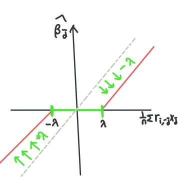
로 초기화하고 잔차인 계산
에 대해 반복
Step3.1-2를 수렴할 때까지 반복
원래의 scale로 다시 변환
python에서 사용할 때는 sklearn.linear_model모듈의 Ridge와 Lasso함수의 옵션 중 alpha값이 에 해당합니다.R에서는 glmnet에서 cv.glmnet함수로 alpha=1이면 Lasso, alpha=0이면 Ridge를 시행할 수 있고, Cross-validation을 통해 값을 도출합니다.1 | %matplotlib inline |
반응변수 와 개의 설명변수 로 이루어진 개의 데이터에 관한 선형 회귀 식은 다음과 같습니다.
여기서 는 행렬로 design matrix라 불립니다.
print(boston.DESCR)를 통해 볼 수 있고, 여기에서도 확인하실 수 있습니다.CRIM: 범죄율INDUS: 비소매상업지역 면적 비율NOX: 일산화질소 농도RM: 주택당 방 수LSTAT: 인구 중 하위 계층 비율B: 인구 중 흑인 비율PTRATIO: 학생/교사 비율ZN: 25,000 평방피트를 초과 거주지역 비율CHAS: 찰스강의 경계에 위치한 경우는 1, 아니면 0AGE: 1940년 이전에 건축된 주택의 비율RAD: 방사형 고속도로까지의 거리DIS: 보스톤 직업 센터 5곳까지의 가중평균거리TAX: 재산세율.format을 이용해 숫자를 소수점 둘째 자리까지 프린트하도록 설정하는데, ndarray객체인 lr.coef_는 바로 .format함수에 넣을 수가 없어 따로 옵션을 성정했습니다.1 | boston = load_boston() |

1 | intercept: 35.41 |
lr.coef_의 7, 10, 12번 째 값은 0에 가깝습니다. 이는 이에 해당하는 설명 변수인 PTRATIO,AGE,DIS의 설명력이 약함 (weak signal)을 시사합니다.사실 보스턴 데이터는 이렇게 signal은 약하고 noise는 큰 자료이기 때문에 Ridge, Lasso 회귀에 적합한 자료입니다. 이는 Ridge/ Lasso 회귀 섹션에서 더 살펴보겠습니다.
행렬을 계산할 때 특히 컴퓨터 상 문제가 되는 부분은 역행렬입니다. 원칙상 선형 회귀에서 계수의 해를 구하기 위해서는 을 구해줘야 합니다. 그러나 촐레스키 분해를 이용하게 되면 역행렬 계산을 피할 수 있기 때문에 컴퓨터 상 더 stable하다 알려져 있습니다.
어떤 양정치 행렬(positive definite matrix) 가 를 촐레스키 분해하면 다음의 식을 만족하는 하삼각행렬 (lower triangular matrix)가 항상 존재합니다.
여기서 하삼각 행렬인 을 구하는 방법은 R에서는 chol함수를, Python에서는 np.linalg.cholesky를 사용합니다.
행렬 를 촐레스키 분해하여 을 구해보자.
1 | A=matrix(c(4,2,2,4,2,5,7,0,2,7,19,11,4,0,11,25),nr=4) |
1 | # Cholesky decomposition |
R과 Python모두 로 나오고 출력된 값은 다음과 같습니다.
NOTE:

가 full rank라 가정할 때 촐레스키 분해를 이용해 선형 방정식의 해를 구하는 과정은 다음과 같습니다.
R에서 사용한다면 chol2inv(chol(A))로 을 구할 수 있습니다.1 | %matplotlib inline |
from sklearn.datasets import load_breast_cancer에 저장되어 있고 cancer.DESCR를 통해 본 데이터 정보는train_test_split함수를 사용합니다. 여기서 stratify옵션은 반응변수 (response)의 구성 비율에 맞게 층화 추출함을 의미합니다.1 | cancer = load_breast_cancer() |
1 | neighbors=range(1,11) |
forloop을 이용해서 각각의 정확도를 기록하고 그림에 그립니다. 그림을 볼 때, 테스트 정확도가 높은 것은 일 때입니다. 이면, 훈련정확도는 좋지만 테스트 정확도는 낮기 때문에 훈련 데이터에 과적합된 케이스입니다. 이와 반대로, 일 때는 과소적합의 특징을 알 수 있습니다.1 | for n in neighbors: |
kNeighborsRegressor함수의 weights 옵션이 uniform일 경우 단순 평균이 계산되고, distance일 때는 거리를 고려한 가중 평균을 계산할 수 있습니다.mglearn::wave에 적용시켜보았습니다.1 | # kNN 회귀 |

train_test_split의 default: 테스트 데이터의 기본 비율은 0.25!score의 의미: (결정 계수)사람들이 많이 쓰는 범용 텍스트 에디터를 들자면 Atom (아톰), Notepad++(노트패드), Sublime text (서브라임 텍스트), VS Code (비주얼 스튜디오 코드)가 있습니다.
범용이라 표현한 건 에디터 안에서 , Python, Julia, R, Markdown 등을 사용할 수 있기 때문입니다. 특히 저는 VS Code를 LaTeX으로 pdf를 조판할 때, Markdown문서를 GitHub page에 올릴 때 주로 사용합니다.
제가 사용해본 에디터는 Atom과 Sublime text, VS code인데 이러한 이유로 VS code에 정착하게 되었습니다.
latex-workshop에서 스니펫이 유용하게 쓰입니다. 예를 들어, 수식을 작성할 때 \begin{equation}, \end{equation} (\begin{equation*}, \end{equation*})을 써줘야 하는데 이를 BEQ, BSEQ로 줄여 쓸 수 있습니다.latex.json파일을 선택해 추가하면 됩니다.\end{document} edoc로 를 다음과 같이 사용자 지정 스니펫을 쓸 수 있습니다. json문서라 body부분에서 \하나만 쓰게 되면 주석처리되어 대신에 \\로 써줘야 합니다.1 | "edoc":{ |
더 많은 스니펫은 James-Yu/LaTex-Workshop GitHub에서 확인할 수 있습니다.
Ctrl+D(다음 선택 찾기): 바꾸고 싶은 단어를 드래그한 후 Ctrl+D를 누르면 똑같은 단어를 찾아주면서 커서를 다중으로 놓을 수 있는 효과를 냅니다. 따라서 반복되는 단어를 눈으로 보면서 수정하고 싶을 때 아주 편리합니다.Alt+ ↑/↓(행을 위/아래로 이동): 이는 에디터 내에서 행의 위치를 쉽게 바꿀 수 있어 편리합니다.Alt+Click(커서 삽입): 다중 커서를 사용할 때, Alt를 누르면서 마우스로 원하는 위치에 클릭하면 클릭한 위치마다 커서가 생깁니다.Shift+Alt+Drag(열 선택): 이건 해봐야 딱 감이 옵니다. 똑같은 열 위치에 있는 문자들을 다중 선택해주는 단축키입니다.Shift+Alt+↑/↓(위/아래의 행 복사): 복사하고자 하는 행을 선택하고 Ctrl+C를 누르고 다음 행에서 Ctrl+V를 누르는 대신에 한 키로 위, 아래의 행을 복붙할 수 있는 단축키입니다.제 컴퓨터가 오래되다보니 뭐하나 돌리는데 항상 오래 걸리는 데 주관적으로 Atom에 비해 VS Code가 훨씬 가볍다는 느낌을 받았습니다.
LaTeX을 쓸 때 아주 공감이 많이 되는 부분인데요. 특히 LaTeX만을 위한 에디터인 TeXStudio는 한글을 쓸 때 갑자기 커서가 앞으로 가는 등의 오류가 나는 경우가 많습니다. 이에 비해 VS code는 그러한 오류가 일절 없고, 한글 글씨체도 굴림이 아닌 맑은 고딕입니다. (디테일에 신경쓰는 편…)
LaTeX WorkshopMarkdown All in One, Markdown Preview EnhancerPythonR, Julia 도 VS code 내에서 실행가능Diff: 2개의 코드를 비교하고 싶을 때 쓰는 확장프로그램Code Spell Checker: 영어 스펠링 체크용Atom 만큼이나 많은 테마를 가지고 있고 아이콘을 위한 테마도 있습니다. 제가 사용하고 있는 테마는 One Dark Theme으로, 이런 느낌입니다 😃

그 외에도 VS code와 Git이 연동되기 때문에 쉽게 GitHub에 commit하고 pull할 수 있다는 장점도 있습니다.